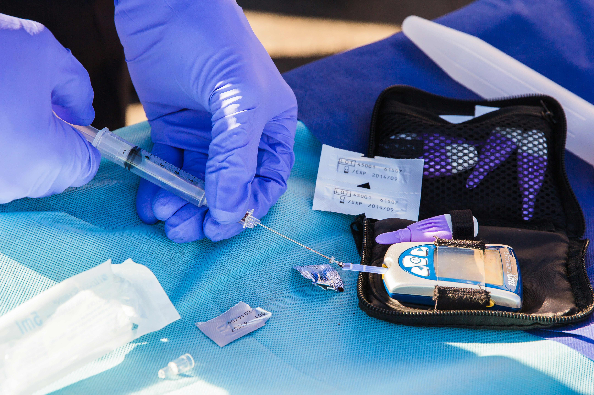

Einführung
Diabetes mellitus ist eine chronische Stoffwechselerkrankung, die durch eine Regulationsstörung des Blutzuckers gekennzeichnet ist. Während gesunde Menschen ihren Blutzucker durch Insulinausschüttung konstant halten, funktioniert dieser Mechanismus bei Diabetes Patient:innen nicht optimal.
Typ-1-Diabetes entsteht durch eine Autoimmunzerstörung der insulinproduzierenden Betazellen in der Bauchspeicheldrüse, während Typ-2-Diabetes durch Insulinresistenz der Körperzellen kombiniert mit gestörter Insulinsekretion entsteht. Langfristig führen unkontrollierte Blutzuckerwerte zu Schäden an Augen (Retinopathie), Nerven (Neuropathie), Nieren (Nephropathie) und Gefäßen.
Kurz erklärt
Moderne Diabetes-Technologien ermöglichen eine präzise Blutzuckerkontrolle durch kontinuierliche Messung, algorithmische Vorhersagen und automatisierte Insulinabgabe. Drei Technologie-Säulen sind zentral:
- Sensoren: Kontinuierliche Glukosemessung (CGM) statt einzelner Messungen
- Intelligente Pumpen: Automatische Insulinabgabe basierend auf Glukosedaten
- Algorithmen: KI-Systeme vorhersagen Glukoseverläufe und optimieren die Therapie
Das Ziel: Hypoglykämien (Unterzuckerungen) vermeiden und optimale Blutzuckerkontrolle erreichen.
3D-Modell: Insulinpumpe
Eine kompakte 3D-Ansicht einer Insulinpumpe und ihres Aufbaus.
Modell wird geladen...
Steuerung: Linke Maustaste drehen, Mausrad zoomen, rechte Maustaste verschieben. Handy: Mit einem Finger drehen, mit zwei Fingern zoomen und verschieben.
Technische Funktionsweise
Blutzuckermessgeräte (Point-of-Care)
Klassische Handgeräte messen Blutglukose elektrochemisch über Teststreifen. Ein Enzym (typischerweise Glukoseoxidase oder Hexokinase) katalysiert eine Reaktion, die einen Strom proportional zur Glukosekonzentration erzeugt. Das Gerät errechnet daraus den Wert. Diese Methode ist invasiv (Fingerstich), aber schnell und akkurat.
Continuous Glucose Monitoring (CGM)
CGM-Sensoren messen interstitielle Glukosewerte alle 1–5 Minuten und übertragen die Daten kabellos an ein Empfängergerät oder Smartphone. Die Sensoren arbeiten nach drei Prinzipien:
- Enzymbasiert: Glukoseoxidase katalysiert eine Oxidation, die Strom erzeugt
- Fluoreszenzbasiert: Fluorophore leuchten proportional zur Glukosekonzentration
- Optisch: Lichttransmission durch Glukose wird gemessen
Insulinpumpen
Insulinpumpen sind tragbare Geräte, die über einen dünnen Katheter kontinuierlich Insulin subcutan abgeben. Sie arbeiten nach folgendem Prinzip:
- Basalrate: Kontinuierliche Insulinabgabe zur Grundversorgung (meist nachts)
- Bolus: Zusätzliche schnelle Insulingabe bei Mahlzeiten oder bei hohen Glukosewerten
- Correction: Anpassung bei Abweichungen vom Zielbereich
Closed-Loop Systeme
Moderne Hybrid-Closed-Loop Systeme verbinden CGM, Pumpe und Algorithmus automatisch:
- CGM misst Glukosewert
- Algorithmus kalkuliert Trend und Vorhersage (z.B. für die nächsten 30 Minuten)
- Ggf. wird Insulinabgabe automatisch erhöht oder reduziert
- Patient:in erhält eine Vorhersage und kann manuell eingreifen
Diese Systeme nutzen Machine Learning, um Individuelle Muster zu erkennen (Essgewohnheiten, Bewegung, Schlafzyklen).
Ãœbersicht: Diabetes-Technologien im Vergleich
| Gerätyp | Messmethode | Häufigkeit | Invasivität | Genauigkeit |
|---|---|---|---|---|
| Blutzuckermessgerät | Elektrochemisch | 4–8 × täglich | Invasiv (Fingerstich) | ±15% |
| CGM (enzymatisch) | Glukoseoxidase | Alle 5 Min. | Minimal-invasiv (Sensor 10 Tage) | ±10% |
| CGM (optisch) | Fluoreszenz | Alle 1 Min. | Nicht-invasiv (geplant) | ±8% |
| Insulinpumpe | Abgabesystem | Kontinuierlich | Minimal-invasiv | ±10% |
| Closed-Loop | CGM + Algorithmus | Automatisch | Minimal-invasiv | ±7% |
Anwendungsbeispiel: Frau M. mit Diabetes Typ 1
Frau M., 32 Jahre alt, Typ-1-Diabetes seit 8 Jahren. Bisher maß sie ihren Blutzucker 6–8 Mal täglich selbst und spritzte Insulin vier Mal täglich.
Situation vorher: Häufige nächtliche Unterzuckerungen, HbA1c von 7,8% (Zielwert unter 7%), psychische Belastung durch ständige Messungen.
Einführung einer Hybrid-Closed-Loop: Frau M. trägt jetzt einen CGM-Sensor und eine intelligente Insulinpumpe. Der Algorithmus passt die nächtliche Basalrate automatisch an, warnt sie bei drohenden Unterzuckerungen, und empfiehlt Bolus-Werte vor Mahlzeiten.
Ergebnis nach 6 Monaten: HbA1c gesunken auf 6,9%, nächtliche Unterzuckerungen von 3 auf 0–1 pro Woche, psychische Belastung deutlich geringer. Sie kann sich auf ihr Leben konzentrieren statt auf Diabetes-Management.

Vorteile und Grenzen
Vorteile
- Präzisere Glukosekontrolle: Bessere Werte und weniger Extreme
- Reduktion von Komplikationen: Längerfristig weniger Organ- und Nervenschäden
- Verbesserte Lebensqualität: Weniger manuelle Messungen und Injektionen
- Bessere Prognose: Längere Lebenserwartung und bessere Gesundheit
- Datengestützte Entscheidungen: Ärzte erhalten detaillierte Glukosekurven
Grenzen und Herausforderungen
- Kosten: Systeme kostenintensiv; nicht alle Krankenkassen übernehmen
- Kalibrierung & Fehler: Sensoren müssen regelmäßig kalibriert werden; gelegentliche Falschmessungen
- Tragekomfort: Nicht alle Patient:innen akzeptieren Geräte am Körper
- Datenschutz: Glukosedaten sind hochsensibel; sichere Speicherung erforderlich
- Abhängigkeit: Risiko psychischer Abhängigkeit von der Technologie
- Lücken: Sensoren können Messungen unterbrechen; Algorithmen sind nicht perfekt
Gesellschaftliche Relevanz
Epidemiologie: Weltweit leben etwa 537 Millionen Erwachsene mit Diabetes. Die Zahlen wachsen exponenziell, vor allem durch Typ-2-Diabetes und Ãœbergewicht. Die Gesundheitssysteme sind belastet durch Komplikationen und Kosten.
Chancen: Bessere Technologien könnten Komplikationen reduzieren, Gesundheitskosten senken und Millionen Menschen ein besseres Leben ermöglichen. Dies ist auch ein Beitrag zu nachhaltiger Entwicklung (SDG 3: Gesundheit und Wohlbefinden).
Ethische Fragen: Wie können wir gerechte Zugang zu Technologien sicherstellen? Was ist mit Datenschutz und algorithmischen Verzerrungen? Sollten Versicherungen Glukosedaten für Prämienfestlegung verwenden dürfen?
Zukunftsperspektiven
Implantierbare Sensoren: Forschung zielt auf Sensoren, die mehrere Jahre unter der Haut arbeiten. Dies würde das Tragekomfort-Problem lösen.
Nicht-invasive Messung: Grenzschutzprozesse nutzen Schweiß, Tränen oder Speichel für Glukosemessung – ganz ohne Nadeln. Erste Prototypen existieren.
Künstliches Pankreas: Ein vollständig automatisiertes System, das Insulin nach Bedarf abgibt, ohne dass Patient:innen eingreifen müssen.
KI-Verbesserungen: Machine Learning wird besser bei der Vorhersage von individuellen Glukosemustern. Personalisierte Modelle könnten die Präzision weiter verbessern.
Bioelektronische Therapie: Alternative Ansätze: Elektrische Stimulation von Nerven könnte die Insulinausschüttung regeln.
Technische Herausforderungen
Datenschutz & Sicherheit
Glukosedaten sind hochsensibel: Sie verraten Essgewohnheiten, Arbeitsmuster und Gesundheitsstatus. Sichere Verschlüsselung und Speicherung sind essentiell. Hacker könnten medizinische Geräte manipulieren – ein erhebliches Risiko.
Echtzeit-Verarbeitung
Algorithmen müssen in Echtzeit Glukosedaten analysieren und Entscheidungen treffen. Bei Batterien und Rechenkraft begrenzt: Effiziente Algorithmen sind erforderlich.
Systemzuverlässigkeit
Ein Fehler in der Insulinpumpe oder im Algorithmus kann lebensbedrohlich sein (Unterzuckerung, Ketoazidose). Tests nach streng regulierten Medizinstandards notwendig.
Energieeffizienz
Sensoren und Pumpen müssen tagelang oder wochenlang auf Batterien laufen. Niedrigstromverbrauch ist zentral. Induktives Laden könnte Batterien überflüssig machen.
Fehlertoleranz
Sensoren können fehlerhaft kalibriert sein oder ausfallen. Der Algorithmus muss robustes Degrading-Verhalten zeigen und Patient:innen klar informieren, wenn die Qualität abnimmt.
Glossar
Informatik-Reflexion: Die Rolle der Datenverarbeitung
Diabetes-Technologien sind ein Beispiel, wie Informatik Leben retten kann. Die zentralen informatischen Herausforderungen sind:
- Algorithmen-Design: Der Closed-Loop-Algorithmus muss robust, vorhersagbar und schnell sein. Fehler können lebensbedrohlich sein – dies erfordert Verifikation und Validierung nach Medizinstandards.
- Echtzeitverarbeitung: Daten müssen in Millisekunden verarbeitet werden. Embedded-Systeme mit begrenzt Ressourcen sind erforderlich.
- Cybersecurity: Medizinische Geräte sind häufig Ziele von Angriffen. Sichere Kommunikation, Verschlüsselung und regelmäßige Updates sind essentiell.
- Datenanalyse: Machine Learning verbessert die Personalisierung, aber erfordert ethische Ãœberlegung: Kann ein Algorithmus Verzerrungen enthalten?
- Benutzer-Schnittstellen: Die beste Technologie hilft nicht, wenn sie zu kompliziert ist. Gutes UX-Design ist medizinisch relevant.
Datenschutz: Diese Website speichert keine Daten über dich. Es werden keine Cookies, Tracking-Tools oder externen Skripte verwendet.